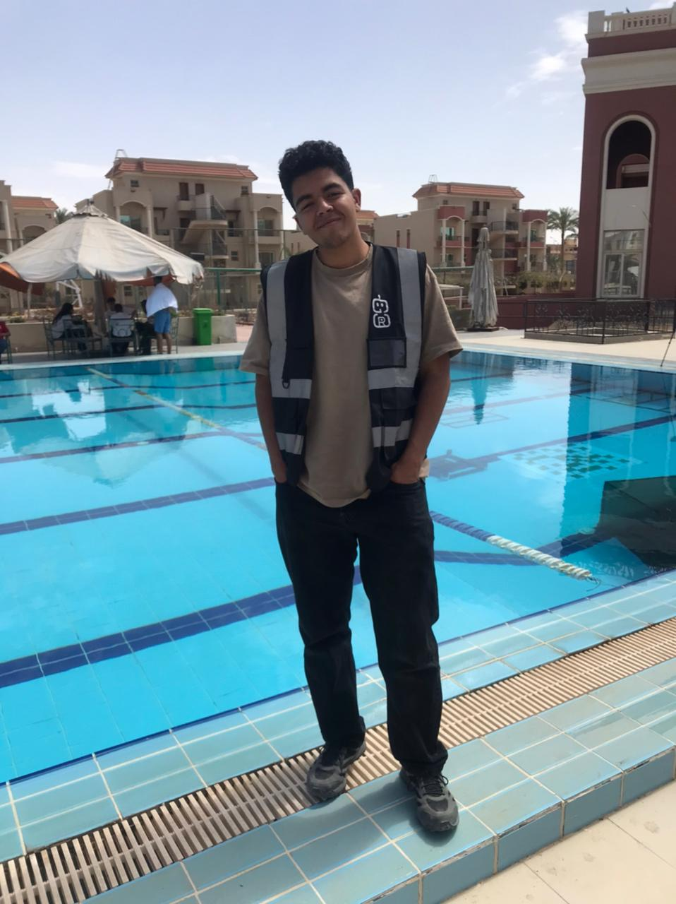

2026 | Mentorship Clinics Team Leader
RiseUp Summit '26
Led critical mentorship clinic operations for the summit, ensuring smooth knowledge transfer and facilitating core sessions between top mentors and startups.
- Mentorship Clinics '26 Team Leader.
- Facilitated core mentorship sessions and managed operational flow.

2025 | Startup Exhibition Team Leader
RiseUp Summit '25
Managed the startup exhibition floor, ensuring participating companies had maximum visibility and smooth logistics during the summit.
- Startup Exhibition '25 Team Leader.
- Coordinated schedules, booths, and interactions for participating startups.

2025 | Partners and Startups Team Leader
Proptech '25
Spearheaded management for high-level partners and startups to ensure flawless event execution for scaling tech-real-estate companies.
- Partners and Startups '25 Team Leader.
- Managed key partners, sponsors, and startups for smooth summit operations.

2025 | Crowd Managing Member
ECS 9th Edition
Contributed heavily to large-scale engineering community events, taking on intense operational roles to ensure thousands of attendees and partners had a great experience.
- Orchestrated large crowd movements and venue safety protocols during peak event hours.

2024 | Partners and Scaleups Managing Member
ECS 8th Edition
Served as a core member for scaling engineering summits by directly managing partner relations and event logistics.
- Ensured flawless operation flows and partner success during the summit.

Safety Judge
GRC Competition
Served as a Safety Judge at the GRC Competition in the Go Dive Derby category.
- Monitored robots and track conditions to ensure absolute safety and compliance with derby rules.